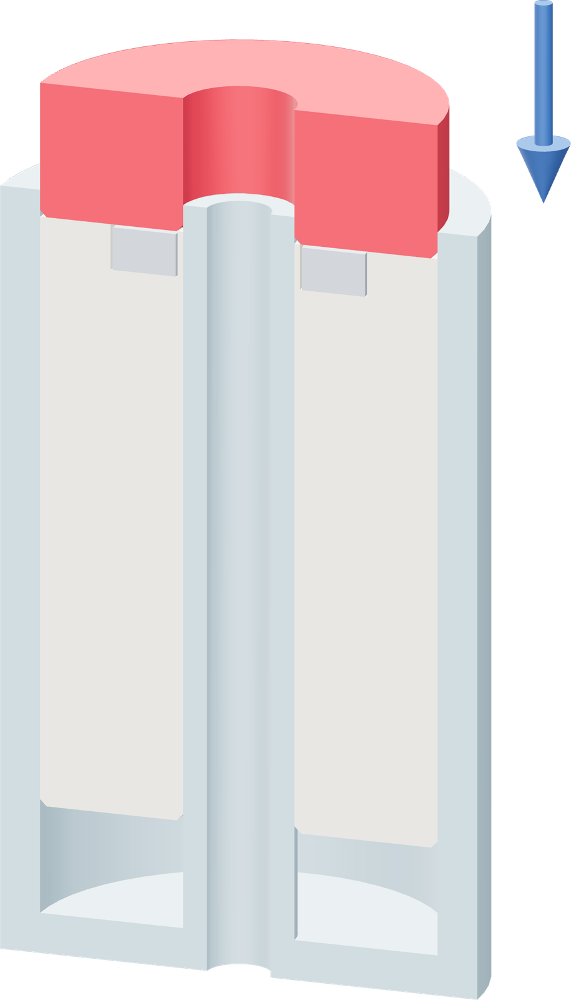
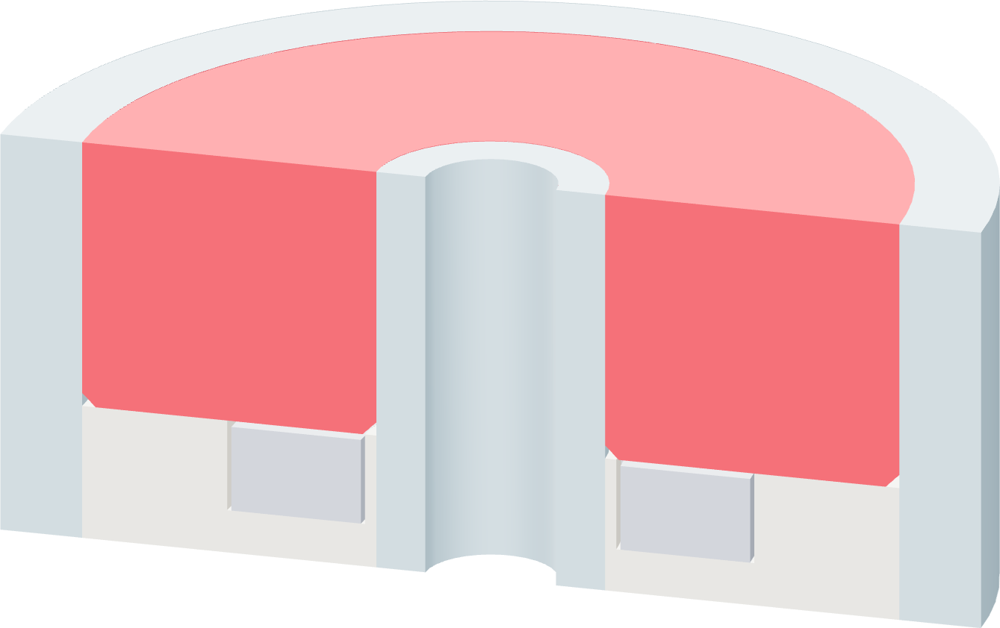

Press the insert flush
The short insert pushes the core home, captures the magnet and supplies a flat surface for the roof.


- Lower the short insert over the bore sleeve with its chamfered end down. Rest it on the core.
- Press downward evenly on opposite sides. Use the flat face of the clean plastic scraper to spread the last push across the insert.
- Seat the insert with its flat upper face level with the PETG outer rim and bore rim. The core rests on the shell floor beneath it.
- Lift the scraper clear. Brush or lift away any loose string from the top surface.
The seating surface
The roof prints across the whole foam annulus. Leave the upper face flat and level with the two PETG rims, and keep the central guide bore open.